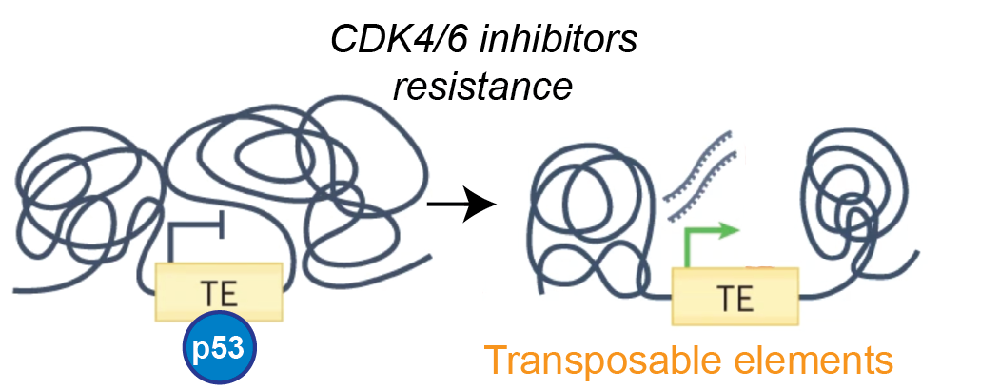
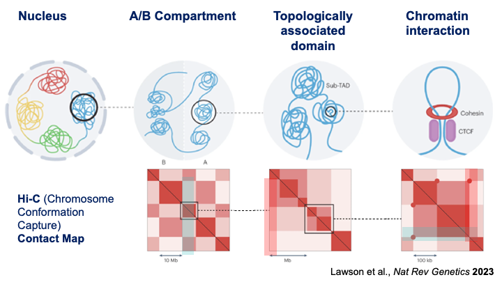

Current Projects
EXPLORING THE CONTRIBUTION OF TRANSPOSABLE ELEMENTS TO GENE DEREGULATION IN CANCER
Transposable elements (TEs), known as “jumping genes”, are mobile DNA elements that have expanded within the genome throughout evolution and constitute over 50% of the human genome.
Epigenetic dysregulations are hallmarks of cancer and that provides a particularly fertile ground for TE activation. TEs reactivated in cancer can serve as regulatory elements, including promoters and enhancers, triggering oncogenic transcriptional response. In contrast, induction of TEs through genome-wide epigenetic changes in cancer cells could also potentially trigger anti-tumour immune responses leading to the destruction of cancer cells via “viral mimicry".
The primary objective of this research is to comprehensively delineate the molecular and cellular functions of TEs in the regulatory cancer genome and characterise the epigenetic mechanisms that define their diverse activities. The key aims are to:
• Identify and characterize regulatory TEs across all cancer sub-types in TCGA and determine their transcriptional effects
• Explore how these regulatory TEs contribute to cancer cellular phenotypes using models of TE activation in cancer
• Identify chromatin variants and transcription factors involved in TE regulation and assess their potential for targeting in cancer.

TARGETING REGULATORY TRANSPOSABLE ELEMENTS IN CDK4/6 INHIBITORS RESISTANT BREAST CANCER
Inhibitors of cyclin-dependant kinases 4 and 6 (CDK4/6i) are now standard of care treatment of metastatic estrogen receptor-positive (ER+) breast cancer. It is expected that all patients with advanced ER+ breast cancer will receive CDK4/6i. However, eventual treatment failure is unfortunately inevitable. No clear second-line treatment strategy exists following the development of CDK4/6i resistance. The widespread emergence of resistance to CDK4/6i is therefore poised to become the major challenge for the management of metastatic ER+ breast cancer.
The TP53 tumour suppressor gene, known as the “guardian of the genome”, is the most frequently altered gene in cancer. It encodes for a transcription factor p53 that triggers a transcriptional program to control cellular stress response. The control of TEs is an important component of p53's function as the guardian of the genome and p53 reactivation is a promising anticancer strategy.
Using in vitro and in vivo pre-clinical models we are uncovering the molecular mechanisms of CDK4/6i resistance and testing if therapeutic targeting of TEs via p53 activation can restore sensitivity and prolong response to CDK4/6 inhibitors in our established cell lie and PDX models.

ELUCIDATING THE ROLE OF 3D GENOME STRUCTURE IN LINEAGE PLASTICITY IN CANCER
Cell lineage plasticity is recognized as a novel mechanism of tumor progression and treatment resistance in cancer. It is mainly driven by dynamic transcriptional and epigenetic changes, however the role of 3D genome structure alterations in driving lineage plasticity is not yet fully understood. Understanding the key 3D genome structure, epigenetic and transcriptional regulators of cancer cell plasticity can yield new avenues for therapy.

DEVELOPMET AND OPTIMAZATION OF THE SINGLE-CELL Hi-C TECHNOLOGY
Cellular heterogeneity is a major problem in cancer therapy, as treatment-resistant cells can promote relapse. The advent of single-cell genomics techniques allows the determination of epigenetic and transcriptional profiles of these treatment-resistant populations. By developing new methods to study and integrate the 3D genome, epigenetic and transcriptomics datasets from single-cells, we aim to further understand the molecular mechanisms of treatment resistance and identify new avenues for therapy to target the entire tumour population, or in combination with existing therapies.